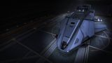

Макс. скорость / с форсажем
214 / 357 м/с
Core Dynamics облегчила Dropshipи получила быстрый, манёвренный корабль для ближнего боя с упором на броню, двумя большими орудийными креплениями и двумя военными отсеками для усиления корпуса. По огневой мощи он немного уступает дорогим специализированным кораблям, но сочетание скорости, брони и цены делает его естественным выбором для тех, кто набирает ранг на пути к Federal Corvette.

У этого корабля оценка пригодности по шкале 1–100 отражает возможности полностью улучшенной у инженеров сборки для этой роли в сравнении со всеми другими кораблями той же роли. См. как выставляются оценки кораблям.
Federal Assault Ship появился, когда Core Dynamics взяла медлительный Federal Dropship и переделала его для агрессивного боя. Лишнюю массу убрали, двигатели оживили. Получился быстрый и манёвренный корабль ближнего боя с двумя большими орудийными креплениями, мощной базовой бронёй и двумя военными отсеками для усиления корпуса. Это средний корабль Федерации, созданный, чтобы сблизиться, сильно ударить и не терять подвижности.
По замыслу он похож на Alliance Chieftain: это манёвренный, недорогой и крепкий средний боевой корабль. По сравнению с Chieftain у FAS на пару орудийных креплений меньше, зато манера полёта чуть агрессивнее, а сам корабль выполнен в духе Федерации. Для покупки нужен ранг ВМС Федерации. Для командиров, которые повышают ранг Федерации на пути к Corvette, это корабль, на котором приятно вести бои по дороге к цели.
Агрессивный бой в зонах конфликта и районах добычи ресурсов (RES), уничтожение пиратов и повышение ранга Федерации: всё, где нужен быстрый, крепкий средний корабль, способный сблизиться и сильно ударить.
Четыре особенности выделяют FAS среди кораблей Федерации для ближнего боя:
Всего четыре орудийных крепления и небольшие дополнительные отсеки ограничивают огневую мощь и защиту по сравнению с дорогими средними кораблями. Базовый щит слаб, и основная защита приходится на броню. Кроме того, для покупки нужен ранг Федерации. Корабль Alliance Chieftain обладает похожим сочетанием манёвренности и прочности, имеет больше креплений и не требует ранга. FAS выделяется характером управления и хорошо подходит для повышения ранга Федерации.
Лучшая в классе скорость и манёвренность вместе с тяжёлой бронёй 540 дают оценку 84. Дальше её ограничивают всего четыре крепления (2L 2M), небольшие дополнительные отсеки и слабый базовый щит ~133 МДж.
Итоговая оценка 84/100 основана на критериях боевой роли, расположенных по приоритету. У каждого критерия есть вес (доля от 100). Корабль получает часть баллов по каждому из них в зависимости от того, как выглядит на фоне всех соперников. Эти баллы складываются в итоговую оценку.
| Критерий | Баллы | Почему столько |
|---|---|---|
| Орудийные крепления | 23/30 | Два больших и два средних крепления (4 всего) дают основному вооружению достаточно мощи для целей в RES и CZ, но уступают всем средним кораблям с более высокой оценкой: у Krait Mk II и Python набор 3L 2M, у Corsair шесть орудий, у Gunship семь. |
| Распределитель энергии | 10/10 | Распределитель энергии класса 6 питает два больших орудия и форсаж. «Ускоренная зарядка» пополняет запас WEP, позволяя кинетическим орудиям стрелять на протяжении всей схватки. Для этого класса хватает, но ничего выдающегося. |
| Щит | 10/15 | Базовый щит всего ~133 МДж: корабль полагается на броню, а не на щит. Даже с усиленным двухконтурным щитом и двумя усилителями с «Усиленной конструкцией» предел около ~520 МДж, намного меньше, чем у специализированных щитовых сборок. |
| Броня и отсеки | 13/15 | Тяжёлая базовая броня 540 и два военных отсека класса 4 дают живучесть, неожиданную для такого размера (~2,800+ эффективной брони с улучшениями). Но дополнительные отсеки невелики (5·5·4·3·2·2·1), поэтому много усилителей и других модулей не поставить. |
| Манёвренность | 20/20 | Форсаж 357 м/с и отличная скорость разворота. Это самый быстрый на форсаже средний боевой корабль Федерации, с улучшениями он превышает ~440 м/с. Он может сблизиться, удерживать цель под огнём и выйти из боя по своему выбору; по лётным качествам это почти лидер роли. |
| Оснащение и гибкость | 8/10 | Четыре внешних крепления позволяют взять усилители щита, тепловые ловушки и теплоотводные катапульты. Но средняя площадка, небольшие внутренние отсеки и требование ранга главного старшины Федерации делают его специализированным кораблём ближнего боя, а не универсалом. |
| Взвешенный итог | 84/100 | Совпадает с оценкой пригодности этого корабля для выбранной роли в заголовке. |
Веса отражают редакционную расстановку приоритетов для этой роли, а не формулу из игры. Длина полосы показывает, какую часть баллов корабль получил по критерию: самые длинные принесли больше всего баллов, самые короткие показывают слабые места. См. как выставляются оценки кораблям.
В каждой таблице корабли оцениваются именно для боя, с разделением по размерам посадочных площадок. Столбец Орудийные крепления показывает набор орудийных креплений, то есть основу под вооружение. Оценка пригодности по шкале 1–100 та же, что и на остальном сайте.
| Корабль | Класс | Орудийные крепления | Плюсы и минусы | Оценка |
|---|---|---|---|---|
| Fer-de-Lance | Средний | 1H 4M | Оценка выше; манёвренность; крепленияБроня | 93 |
| Krait Mk II | Средний | 3L 2M | Оценка выше; крепления; броняРаспределитель | 90 |
| Python Mk II | Средний | 4L 2M | Оценка выше; крепления; распределительБроня | 90 |
| Mamba | Средний | 1H 2L 2S | Оценка выше; распределитель; крепленияБроня | 89 |
| Alliance Chieftain | Средний | 2L 1M 3S | Оценка выше; манёвренность; броняЩит | 88 |
| Alliance Challenger | Средний | 1L 3M 3S | Оценка выше; броня; щитМанёвренность | 86 |
| Corsair | Средний | 3L 3M | Оценка выше; распределитель; гибкостьМанёвренность | 85 |
| Federal Assault Ship здесь | Средний | 2L 2M | — этот корабль (точка отсчёта) | 84 |
| Python | Средний | 3L 2M | Распределитель; гибкостьОценка ниже; манёвренность | 83 |
| Federal Gunship | Средний | 1L 4M 2S | Распределитель; броняОценка ниже; манёвренность | 82 |
| Alliance Crusader | Средний | 1L 2M 3S | Распределитель; броняОценка ниже; манёвренность | 80 |
| Federal Dropship | Средний | 1L 4M | Броня; крепленияОценка ниже; манёвренность | 76 |
| Krait Phantom | Средний | 2L 2M | Гибкость; манёвренностьОценка ниже; броня | 74 |
Оценены 13 боевых кораблей со средней площадкой; лидирует Fer-de-Lance (93). Все они садятся на площадки того же класса и являются прямыми альтернативами FAS.
| Корабль | Класс | Орудийные крепления | Плюсы и минусы | Оценка |
|---|---|---|---|---|
| Federal Corvette | Большой | 2H 1L 2M 2S | Оценка выше; крепления; распределительЩит | 98 |
| Imperial Cutter | Большой | 1H 2L 4M | Оценка выше; распределитель; щитМанёвренность | 91 |
| Anaconda | Большой | 1H 3L 2M 2S | Оценка выше; распределитель; щитМанёвренность | 88 |
| Imperial Clipper | Большой | 2L 2M | Манёвренность; распределительОценка ниже; крепления | 79 |
| Type-10 Defender | Большой | 4L 3M 2S | Крепления; броняОценка ниже; манёвренность | 78 |
Среди боевых кораблей с большой площадкой оценены 5; лидирует Federal Corvette (98). Это более крупные площадки и бюджеты. По характеристикам такие корабли превосходят Eagle, но требуют площадки другого класса.
| Корабль | Класс | Орудийные крепления | Плюсы и минусы | Оценка |
|---|---|---|---|---|
| Kestrel Mk II | Малый | 3L 2S | Оценка выше; крепления; гибкостьБроня | 85 |
| Vulture | Малый | 2L | Манёвренность; щитОценка ниже; броня | 80 |
| Cobra Mk V | Малый | 3M 2S | Гибкость; крепленияОценка ниже; распределитель | 78 |
| Imperial Courier | Малый | 3M | Манёвренность; щитОценка ниже; броня | 70 |
| Viper Mk IV | Малый | 2M 2S | Броня; распределительОценка ниже; манёвренность | 66 |
| Diamondback Explorer | Малый | 1L 2M | Гибкость; манёвренностьОценка ниже; броня | 65 |
| Viper Mk III | Малый | 2M 2S | Манёвренность; крепленияОценка ниже; броня | 63 |
| Diamondback Scout | Малый | 2M 2S | Гибкость; броняОценка ниже; щит | 60 |
| Cobra Mk III | Малый | 2M 2S | Манёвренность; распределительОценка ниже; щит | 58 |
| Eagle Mk II | Малый | 3S | Манёвренность; крепленияОценка ниже; щит | 55 |
| Imperial Eagle | Малый | 1M 2S | Манёвренность; крепленияОценка ниже; гибкость | 54 |
| Cobra Mk IV | Малый | 2M 3S | Крепления; броняОценка ниже; манёвренность | 44 |
| Sidewinder Mk I | Малый | 2S | Манёвренность; гибкостьОценка ниже; крепления | 40 |
Среди боевых кораблей с малой площадкой оценены 13; лидирует Kestrel Mk II (85). Это более дешёвые корпуса и площадки поменьше. По цифрам они превосходят FAS, но относятся к другому классу площадок.
За ~19.1 млн кр. FAS даёт хорошие боевые возможности, но для покупки нужен ранг ВМС Федерации — главный старшина (Chief Petty Officer). Право купить корабль нужно сначала заслужить. Инженерное оснащение обходится недорого благодаря небольшим внутренним отсекам.
Удобно, что задания для повышения ранга Федерации (и бои, которые помогают их выполнять) как раз подходят FAS. Поэтому путь к Corvette и полёты на FAS хорошо дополняют друг друга.
FAS служит и наградой за ранг Федерации, и способом поднять его дальше. Сражайтесь на нём в зонах конфликта на стороне Федерации: бой одновременно продвигает к следующему рангу.
Агрессивная сборка ближнего боя с упором на броню: оба военных отсека и дополнительные отсеки заняты усилителями, а двухконтурный щит работает только как восстанавливающийся первый рубеж защиты. Начальная версия требует только покупки модулей; класс A даёт базовую боевую сборку; версия с инженерными улучшениями строится по стандартной боевой схеме с приоритетом скорости и корпуса.
| Отсек | Начальная · только покупка | Класс A · без улучшений | С инженерными улучшениями | Примечания |
|---|---|---|---|---|
| Орудийные крепления | ||||
| Большое 1 | 3E Импульсный лазер (поворотное крепление) | 3C Мультипушка (поворотное крепление) | G5 Перегрузка + Коррозионные снаряды | Основное орудие, очень мощное для этого класса. Одной установки с коррозионными снарядами хватает, чтобы снизить сопротивление брони для всех орудий. |
| Большое 2 | 3C Мультипушка (поворотное крепление) | 3C Мультипушка (поворотное крепление) | G5 Перегрузка + Автозарядка | Вторая большая мультипушка; автозарядка устраняет паузы на перезарядку, и стрельба не прерывается. |
| Среднее 1 | 2F Импульсный лазер (поворотное крепление) | 2D Лучевой лазер (поворотное крепление) | G5 Эффективный + Теплоотвод | Сначала купите дешёвый импульсный лазер, а на этапе класса A замените его лучевым на поворотном креплении; Теплоотвод снижает нагрев при снятии щитов. |
| Среднее 2 | 2F Мультипушка (поворотное крепление) | 2F Мультипушка (поворотное крепление) | G5 Перегрузка + Автозарядка | Средний мультипушка добавляет длительный кинетический урон в секунду, а автозарядка пополняет боезапас. |
| Внешние крепления | ||||
| Внешнее 1 | 0A Усилитель щита | 0A Усилитель щита | G5 Усиленная конструкция + Суперконденсаторы | Первый усилитель щита; «Усиленная конструкция» увеличивает запас прочности двухконтурного щита в МДж. |
| Внешнее 2 | — | 0A Усилитель щита | G5 Усиленная конструкция + Суперконденсаторы | Второй усилитель с «Усиленной конструкцией» — самый дешёвый способ заметно повысить прочность щита на этом корабле. |
| Внешнее 3 | — | 0I Пусковая установка тепловых ловушек | G1 Запас боеприпасов (нет экспериментального эффекта) | Необязательно, низкий приоритет. «Запас боеприпасов» добавляет залпы тепловых ловушек. Тепловые ловушки сбивают прицел поворотных и турельных орудий. |
| Внешнее 4 | — | 0I Теплоотводная катапульта | G1 Запас боеприпасов (нет экспериментального эффекта) | Необязательно, низкий приоритет. «Запас боеприпасов» добавляет заряды теплоотводной катапульты. Сбрасывает тепло при скрытном ходе и для восстановления после использования «Теплоотвода». |
| Основные модули | ||||
| Обшивка | Лёгкий сплав | Композит военного класса | G5 Усиленная конструкция + Углублённое бронирование | |
| Силовая установка | 6E Силовая установка | 6A Силовая установка | G5 Перегрузка + Рассеивание тепла | Питает два больших орудия, щит, щитовые ячейки и внешние модули. «Перегрузка» добавляет запас мощности, «Рассеивание тепла» отводит лишнее тепло. |
| Маневровые двигатели | 6E Маневровые двигатели | 6A Маневровые двигатели | G5 Грязная настройка двигателей + Форсированные двигатели | В первую очередь поставьте класс A и «Грязную настройку двигателей»: скорость и манёвренность определяют характер FAS. |
| Рамочно-сместительный двигатель (FSD) | 5E Рамочно-сместительный двигатель (FSD) | 5A Рамочно-сместительный двигатель (FSD) | G3 Увеличенная дальность + Управление массой | Класс A, чтобы добираться до боёв и сдавать задания на ранг Федерации. Дальности G3 достаточно: кораблю ближнего боя сверхдальние прыжки не нужны. |
| Система жизнеобеспечения | 5E Система жизнеобеспечения | 5D Система жизнеобеспечения | G5 Облегчённый (нет экспериментального эффекта) | Класс D экономит массу, Облегчённый снижает её ещё сильнее; у модуля жизнеобеспечения нет экспериментального эффекта. |
| Распределитель энергии | 6E Распределитель энергии | 6A Распределитель энергии | G5 Ускоренная зарядка + Сверхпроводники | Ставьте класс A как можно раньше: два больших орудия и форсаж быстро истощают распределитель класса 6. «Ускоренная зарядка» восстанавливает запас WEP. |
| Сенсоры | 4E Сенсоры | 4D Сенсоры | G5 Облегчённый (нет экспериментального эффекта) | Ставьте класс D с облегчённым улучшением: в бою большая дальность сенсоров не нужна, а массу можно сэкономить. |
| Топливный бак | 4C Топливный бак | 4C Топливный бак | (нет чертежа улучшения) | Штатный бак класса C. Ёмкость фиксирована и не поддаётся инженерному улучшению. |
| Военные отсеки | ||||
| Военный 1 | 4E Усилитель корпуса | 4D Усилитель корпуса | G5 Усиленная конструкция + Углублённое бронирование | Усиленная конструкция усилитель корпуса в первом военном отсеке дешевле всего даёт заметную прибавку эффективной брони. |
| Военный 2 | — | 4D Усилитель модулей | (нет чертежа улучшения) | Усилитель модулей распределяет урон пробивших корпус попаданий между внутренними модулями. Инженерное улучшение недоступно. |
| Дополнительные отсеки | ||||
| Размер 5 | 5E Генератор щита | 5C Генератор двухконтурного щита | G5 Усиленный + Быстрая зарядка | Двухконтурный щит быстро восстанавливается под огнём. «Усиленный» увеличивает прочность в МДж, «Быстрая зарядка» ускоряет восстановление. |
| Размер 5 | 5E Грузовой стеллаж | 5A Банк щитовых ячеек | G4 Специализированный (нет экспериментального эффекта) | Необязательно, низкий приоритет. Специализация снижает всплеск нагрева и энергопотребления банка. Позволяет экстренно восстановить щит. |
| Размер 4 | — | 4D Усилитель корпуса | G5 Усиленная конструкция + Углублённое бронирование | Добавьте ещё один усилитель корпуса с «Усиленной конструкцией» в отсек размера 4. Прибавки брони складываются линейно. |
| Размер 3 | — | 3A Банк щитовых ячеек | G4 Специализированный (нет экспериментального эффекта) | Необязательно, низкий приоритет. Специализация снижает всплеск нагрева и энергопотребления банка. Позволяет экстренно восстановить щит. |
| Размер 2 | — | 2D Усилитель модулей | (нет чертежа улучшения) | Усилитель модулей защищает основные модули, необходимые для полёта. Инженерное улучшение недоступно. |
| Размер 2 | — | 2D Усилитель корпуса | G5 Усиленная конструкция + Углублённое бронирование | Ещё один усилитель корпуса с «Усиленной конструкцией» в отсек размера 2 для сборки с упором на броню. |
| Размер 1 | — | 1D Усилитель корпуса | G5 Усиленная конструкция + Углублённое бронирование | Необязательно, низкий приоритет. Увеличенный радиус сканирования расширяет зону покрытия зондов. Позволяет картографировать планеты для сбора исследовательских данных. |
| Планировщики и экспорт | ||||
| Открыть в Coriolis | открыть | открыть | открыть | Открывается на coriolis.io одним нажатием. |
| Открыть в EDSY | открыть | открыть | открыть | Открывается на edsy.org одним нажатием. |
| Скопировать SLEF | Копирует исходные данные формата экспорта оснащения корабля (SLEF) для выбранного варианта. | |||
Базовый щит у FAS слаб, поэтому основную нагрузку принимает броня. Заполните оба военных отсека и дополнительные отсеки усилителями с «Усиленной конструкцией», а двухконтурный щит используйте как восстанавливающийся первый рубеж. Главные инструменты — скорость и прочность: быстро сближайтесь, сражайтесь вблизи и выходите из боя.
Получите ранг, купите корпус (~19.1 млн кр.), поставьте 5E генератор щита с 0A усилителем щита, а в первый военный отсек поставьте 4E усилитель корпуса.
Поставьте в орудийные крепления покупное оружие на поворотных установках: 3E Импульсный лазер и 3C Мультипушка в два больших крепления, 2F Импульсный лазер и 2F Мультипушка в средние. До перехода на класс A оставьте пустыми второй военный отсек, свободные внешние крепления и дополнительные отсеки (кроме штатного грузового стеллажа). До этого этапа отложите лучевой лазер и второй усилитель.
Обшивка на этом этапе остаётся штатной, из лёгкого сплава. Композит военного класса ставьте при переходе на класс A. Даже в облегчённой комплектации скорость и броня с самого начала делают FAS сильным в боях в RES и CZ.
Приоритет перехода на класс A для агрессивной сборки с упором на броню:
FAS побеждает, когда быстро сближается, сильно бьёт и выходит из боя. Сначала поставьте класс A и улучшите у инженера маневровые двигатели, чтобы сохранить это преимущество, затем добавьте композит военного класса и усилители.
Стандартная боевая схема с приоритетом скорости и корпуса. Закрепите чертежи, чтобы применять улучшения G1→G5 удалённо; за экспериментальными эффектами прилетайте лично.
| Модуль | Чертёж | Экспериментальный эффект | Инженер |
|---|---|---|---|
| Маневровые двигатели (6) | Грязная настройка двигателей (G5) | Форсированные двигатели | Professor Palin / Mel Brandon |
| Силовая установка (6) | Перегрузка (G5) | Рассеивание тепла | Hera Tani |
| Мультипушки | Перегрузка (G5) | Коррозионные снаряды (одна) / Автозарядка (остальные) | Tod McQuinn |
| Лучевой лазер | Эффективный (G5) | Теплоотвод | Broo Tarquin |
| Распределитель энергии (6) | Ускоренная зарядка (G5) | Сверхпроводники | The Dweller |
| Обшивка | Усиленная конструкция (G5) | Углублённое бронирование | Selene Jean |
| Усилитель корпуса | Усиленная конструкция (G5) | Углублённое бронирование | Selene Jean |
| Двухконтурный щит (5) | Усиленный (G5) | Быстрая зарядка | Lei Cheung |
| Усилители щита | Усиленная конструкция (G5) | Суперконденсаторы | Didi Vatermann |
Умеренные: стандартные боевые улучшения G5 и усилители с «Усиленной конструкцией». Если материалы уже собраны, их нужно только потратить, а не добывать. При необходимости уточните точное количество для каждого чертежа.
Примерное изменение параметров между тремя вариантами (цифры ориентировочные, а не точные результаты улучшений):
| Показатель | Начальная | Класс A | С инженерными улучшениями |
|---|---|---|---|
| Макс. скорость (с форсажем) | 357 м/с | 357 м/с | ~440 м/с |
| Манёвренность | отличная | отличная | высшая |
| Броня (эфф.) | 540 | ~1,500 | ~2,800+ |
| Щит (МДж) | ~190 | ~270 | ~520 |
| Длительный урон/с | высокий | высокий | высокий |
Военная композитная обшивка и несколько усилителей поднимают эффективную броню намного выше тысячи уже в сборке класса A. Инженерные улучшения — Усиленная конструкция обшивки, Усиленная конструкция для усилителей корпуса и «Углублённое бронирование» повсюду — поднимают броню до нескольких тысяч, а скорость на форсаже превышает 440 м/с. Этот быстрый корабль для агрессивного ближнего боя мгновенно сближается и выдерживает ответный огонь. Урон в секунду хорош, но главные достоинства — скорость и прочность.
Подойдёт любая зона конфликта на стороне Федерации или опасный район добычи (Haz RES). Предпочитайте системы под контролем Федерации, чтобы боевые облигации также повышали ранг Федерации. В окрестностях вашей базы Федерации зоны конфликта дают и кредиты, и повышение ранга на пути к Corvette.
Federal Assault Ship — манёвренный ударный корабль Федерации: быстрый, крепкий, мощный и недорогой. У Федерации получилась облегчённая альтернатива Fer-de-Lance. Для покупки нужен ранг, но сам FAS хорошо подходит для боёв, в которых этот ранг растёт. На нём удобно сражаться на пути к Federal Corvette.
Цифры на этой странице сверены по следующим источникам.